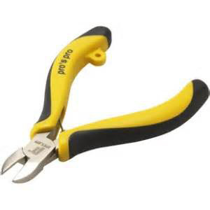
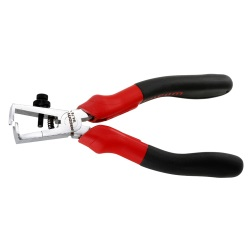
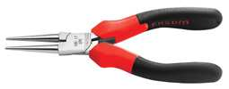
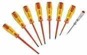
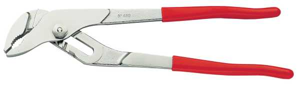
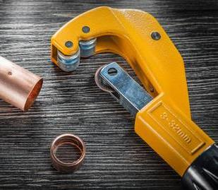
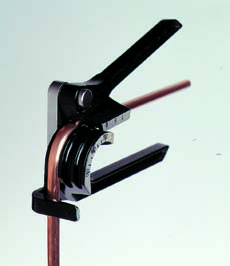

| NiveauCAP IFCA 1A |
Thème / DomaineDécouverte et inventaire de l'atelier |
Séance 1 · 2 h — DOCUMENT DE RÉFÉRENCE, 2 ateliersIdentifier et trier l'outillage |
SéquenceS0 · rentrée 2026 |
| Usage de ce documentVersion complète et rédigée du TP « Identifier et trier l'outillage », couvrant les deux ateliers (Électrique et Façonnage). Elle sert de support au professeur, aux élèves à l'aise qui veulent approfondir, et de base à un futur support bac pro. Elle ne remplace pas les deux documents élève accessibles (≤ 900 mots chacun), qui restent ce que la classe reçoit en séance. |
Mise en situation professionnelle
L'ordre d'intervention n° OI-2026-S0-01 ouvre l'année : c'est la
reprise en main du magasin d'outillage avant le premier chantier. L'atelier n'a jamais été inventorié
dans sa forme actuelle. Chaque équipe reçoit un bac mélangé correspondant à sa famille du jour, ainsi
que des objets non identifiés (OVNI) communs aux deux ateliers, et doit les reconnaître, les compter
et les ranger. Ce travail n'est pas une simulation : le lot de 15 exemplaires que chaque équipe constituera
en fin de séquence est la dotation réelle qui sera ensuite distribuée aux 30 élèves de la classe sous
forme de caisses individuelles. Se tromper de rangement aujourd'hui, c'est fausser l'inventaire que Franck
utilisera pour préparer les caisses de toute l'année.
Objectifs — ce que l'élève doit être capable de faire en sortant de séance
Cinq capacités sont visées, calibrées sur les niveaux 1 à 3 de la taxonomie de Bloom (mémoriser,
comprendre, appliquer — le calibre attendu en CAP semaine 1, sans jamais monter à l'analyse ou à la
comparaison critique, hors calibre à ce stade de l'année) :
- localiser les zones de l'atelier, les rayons de rangement et l'arrêt d'urgence ;
- nommer les familles d'outils de son atelier du jour, en utilisant leur désignation exacte ;
- distinguer deux familles voisines (par exemple une pince coupante d'une pince à dénuder, ou un
coupe-tube d'une lime) et expliquer simplement pourquoi elles ne se rangent pas ensemble ;
- lire une dimension gravée sur un outil (tournevis, cintreuse) plutôt que de la deviner à l'œil ;
- trier, compter et ranger les outils de son bac par famille, en isolant les objets non identifiés
(OVNI) et les outils mal orientés (bac TRANSFERT).
Prérequis — ce que l'élève sait déjà en arrivant
Il s'agit de la toute première séance d'atelier de l'année : aucun prérequis du métier
n'est exigé. Ce que l'élève apporte, c'est un comportement d'élève de lycée professionnel — respecter une
consigne orale donnée une à la fois, travailler en équipe, porter la tenue adaptée (chaussures de sécurité).
C'est par ce prérequis-là, non technique, que commence la pédagogie spiralaire de l'année : le savoir
travaillé aujourd'hui (S2.1, lire un outil et sa fonction) deviendra à son tour un prérequis réactivé dans
les séquences suivantes, dès qu'un TP demandera de choisir le bon outil pour une opération.
Matériel
- Ce document de référence, plus les deux documents élève (Atelier Électrique / Atelier Façonnage)
- 1 bac mélangé par équipe, propre à sa famille d'outils, + objets OVNI répartis dans les deux ateliers
- Bacs de tri étiquetés par famille, dans chaque atelier, + 1 bac OVNI commun + 1 bac TRANSFERT par atelier
- Fiches d'identification et fiches d'inventaire (une par équipe, feuilles 2 des documents élève)
- Plan de l'atelier affiché, localisation de l'arrêt d'urgence et de la trousse de secours
EPI, analyse des risques, gestes interdits, procédure d'urgence
Aucune manipulation sous tension n'a lieu ce jour : le risque électrique dont il est question
est pédagogique (comprendre pourquoi un outil est isolé), pas un risque d'exposition réelle. Les
risques effectivement présents restent celui de la coupure (faces tranchantes des pinces coupantes et
des coupe-tubes, arêtes vives d'un tube fraîchement sectionné) et celui du pincement (mâchoires d'une
pince multiprise, galets d'une cintreuse actionnés pendant qu'une main est encore en place). L'EPI exigé est
la chaussure de sécurité, obligatoire dès l'entrée dans l'atelier. Deux gestes sont formellement
interdits : tester un outil électroportatif sans autorisation du professeur, et utiliser un outil qui
paraît abîmé sans l'avoir d'abord signalé — un outil douteux se pose, il ne se force pas. En cas
d'incident, la procédure est celle de tout l'atelier : couper (arrêt d'urgence localisé en phase 4 du
déroulement), alerter le professeur, ne jamais déplacer une personne blessée. Ces consignes sont
démontrées avant le tri, jamais laissées à la découverte de l'élève : la charte pédagogique FrigorX
pose explicitement que la sécurité ne relève pas de la pédagogie de la découverte, elle se démontre et
s'impose.
❄ inerWeb Édu — par F. Henninot · LPP Jacques Raynaud — Campus EQUATIO
créé le 02/09/2026 · © F. Henninot 2026 — diffusion pédagogique autorisée, mention de l'origine requise
LPP
JACQUES RAYNAUD
S0-Séance 1 · document de référence — préparation et méthode
Préparation
Avant l'arrivée des élèves, deux zones distinctes sont mises en place, une par atelier. Chacune
reçoit : une table par équipe (une équipe = une famille), un bac mélangé de départ par équipe, autant de
bacs de tri étiquetés que de familles annoncées, un bac « OVNI » commun aux deux ateliers — laissé fermé, il
ne s'ouvre qu'en séance 3 — et un bac « TRANSFERT » par atelier. Deux ou trois outils de démonstration sont
préparés à part pour la phase 5 (montrer comment tenir une pince coupante, montrer une gaine isolante
usée). Rien, à ce stade, n'est étiqueté avec la fonction de l'outil : la fiche d'identification que l'élève
reçoit ne comporte que la photo, jamais la réponse — c'est le professeur qui prépare les postes, jamais
l'élève qui les découvre déjà résolus.
Réalisation — la lecture du marquage, une compétence à part entière
Le cœur de cette séance n'est pas seulement de reconnaître une forme d'outil : c'est
d'apprendre à lire ce qui est gravé dessus, relève directe du savoir S2.1 « Outils, normes et
représentation ». Sur un tournevis, le marquage se cherche sur la tige métallique, près du manche, parfois
sur le manche lui-même : il prend la forme de deux informations. Pour un tournevis plat, ce sont deux
nombres — le premier est la largeur de la lame en millimètres, le second la longueur de la tige en
millimètres (par exemple 2,5×50 pour le petit modèle du coffret de l'atelier). Pour un tournevis
cruciforme Pozidriv, le marquage s'écrit PZ suivi d'un chiffre qui donne la taille de
l'empreinte, puis de la longueur de tige (par exemple PZ2×125 pour le gros modèle). Ce n'est pas une
curiosité : la largeur de lame doit correspondre à la largeur de la fente de la vis à serrer, sinon la lame
glisse et déforme l'empreinte, ou pire, dérape et coupe la main qui tient la pièce. Sur une cintreuse
cuivre, la dimension gravée — sur le corps ou sur la molette selon le modèle — indique le diamètre de
tube pour lequel la gorge de cintrage a été calibrée : une cintreuse n'est jamais universelle, elle est
faite pour un seul diamètre, parce que le tube doit être soutenu sur toute sa circonférence pendant le
pliage pour ne pas s'ovaliser ni se plisser côté intérieur du coude ; une gorge trop large laisse le tube
s'écraser, une gorge trop étroite ne le fait pas entrer. C'est pour cela que le parc de cintreuses de
l'atelier compte plusieurs exemplaires, un par diamètre, et que l'élève doit relever la dimension
réellement gravée sur son exemplaire plutôt que mémoriser un chiffre appris par cœur — un coffret
peut comporter une pièce de complément dont le marquage diffère légèrement du repère habituel, et l'usure
peut avoir rendu un chiffre difficile à lire.
Ce dernier point donne d'ailleurs un critère concret de mise au rebut : un marquage
illisible est en lui-même un motif de retrait. Si l'on ne peut plus lire la dimension gravée sur une
cintreuse, on ne peut plus garantir qu'elle est le bon calibre pour l'usage prévu, et l'utiliser à l'aveugle
fait courir le risque d'écraser un tube sur un chantier réel. Même logique pour une pince à dénuder dont les
encoches calibrées ne sont plus repérables à l'œil : l'outil part en « à réviser » plutôt que d'être remis
en circulation. Cette règle sera appliquée formellement en séance 2 (contrôle de l'état), mais elle
s'observe déjà en séance 1, au moment où l'élève doit décider s'il peut lire ou non le marquage de
l'exemplaire qu'il tient.
Le sens professionnel de l'inventaire
Trier des outils un premier jour de rentrée peut sembler une activité mineure ; elle porte en
réalité une tâche centrale du métier de frigoriste, la tâche T6 « Préparer, vérifier les matériels et
outillages ». Sur un chantier réel, un frigoriste prépare sa caisse la veille ou le matin même, en
fonction de l'intervention prévue : c'est cette vérification qui garantit qu'il ne se retrouve pas, une
fois sur place, sans le bon tournevis ou la bonne cintreuse. Un outil manquant sur un chantier ne se règle
jamais gratuitement : il faut soit interrompre l'intervention et revenir plus tard (temps perdu, image
dégradée auprès du client, parfois pénalité contractuelle), soit emprunter ou acheter en urgence à un prix
souvent moins avantageux. C'est pour éviter ce scénario que l'entreprise tient un inventaire à jour et
qu'elle établit, quand un outil manque ou est hors service, un bon de commande : un document qui liste
ce qu'il faut remplacer ou racheter, transmis au responsable du magasin ou au fournisseur. Le tri et le
comptage réalisés cette séance, puis affinés en séance 2 (contrôle de l'état) et clôturés en séance 3
(restitution et rangement définitif), reproduisent en miniature exactement cette logique professionnelle :
l'atelier de la classe devient, le temps de la séquence, le magasin d'outillage d'une entreprise que l'on
remet en ordre avant la première intervention de l'année.
Le mécanisme OVNI / TRANSFERT
Deux catégories à ne jamais confondre
OVNI (objet non identifié) : un outil que personne dans
l'équipe ne reconnaît, qu'il n'a jamais vu ou dont il ne sait pas dire la fonction. La consigne est
stricte : on ne force jamais un OVNI dans une famille par approximation, même si sa forme y ressemble
vaguement. Il rejoint le bac « OVNI », resté fermé jusqu'à la séance 3, où chaque atelier devient
« client » de l'autre : c'est l'atelier voisin qui doit deviner et justifier avant qu'on ne lui donne la
réponse, dans la même logique observer → nommer → expliciter que le reste de la séquence.
TRANSFERT : un outil que l'équipe reconnaît parfaitement, mais
qui appartient à l'autre atelier — par exemple une cintreuse retrouvée dans le bac mélangé électrique,
ou une pince à bec demi-rond coudé retrouvée côté façonnage. Dans ce cas, l'outil n'est pas inventorié
ici : il est simplement posé dans le bac « TRANSFERT » de son atelier d'arrivée, et c'est l'atelier auquel il
appartient réellement qui le comptera plus tard. La différence tient donc à une seule question à se poser en
équipe : « est-ce que je sais ce que c'est, juste pas à cet atelier ? » — la réponse « oui » range l'objet en
TRANSFERT, la réponse « non » le range en OVNI.
Ce mécanisme n'est pas un détail d'organisation : il apprend concrètement ce que fait un
magasinier ou un chef d'équipe qui reçoit un lot d'outils mélangés après un déménagement d'atelier ou une
fusion de stocks — trier vite ce qu'on connaît, sans jamais deviner ce qu'on ne connaît pas, et transmettre
ce qui n'est pas de son ressort à la bonne personne plutôt que de le stocker n'importe où.
❄ inerWeb Édu — par F. Henninot · LPP Jacques Raynaud — Campus EQUATIO
créé le 02/09/2026 · © F. Henninot 2026 — diffusion pédagogique autorisée, mention de l'origine requise
LPP
JACQUES RAYNAUD
S0-Séance 1 · document de référence — monographie Atelier Électrique
Monographie des 9 familles — Atelier Électrique
Désignations exactes de la caisse individuelle réelle (source : « Liste outillage élèves prise
en charge caisse.xlsx », Classe 1 CAP 2022/2023) et fonctions officielles (source : « 01-Outillages et
protections.pdf », Dossier Matériels & Équipements v001-2014). Pour chaque famille : ce qu'elle fait, ce qui
la distingue de sa voisine, pourquoi elle est conçue ainsi, et l'erreur d'usage la plus fréquente.

1 — Pince coupante diagonale isolée
Fonction : coupe les fils et câbles électriques. Conception : les mâchoires sont taillées
en biais (« diagonale ») plutôt que droites, pour couper au ras d'une surface ou dans un espace restreint
sans devoir présenter le fil perpendiculairement à la pince. Distinction : contrairement à la pince
à dénuder, elle sectionne tout — gaine et cuivre ensemble. Erreur typique : la confondre avec
la dénudeuse parce que les deux « coupent » — on lève le doute en regardant la trace laissée : un fil
intact sous la gaine retirée signe la dénudeuse, un fil sectionné signe la coupante.

2 — Pince à dénuder isolée
Fonction : retire la gaine isolante d'un fil sans couper le cuivre. Conception : ses
mâchoires portent des encoches calibrées par section (0,5 à 4 mm² sur le modèle de la caisse) au
lieu d'une lame droite, précisément pour éviter de sectionner les brins de cuivre — une lame droite
coupe à une profondeur incontrôlée, tandis qu'une encoche calibrée limite la profondeur de coupe à
l'épaisseur exacte de la gaine correspondant à la section nominale choisie. Erreur typique :
utiliser la mauvaise encoche, ce qui sectionne un ou plusieurs brins ou laisse la gaine mal dénudée.

3 — Pince à bec demi-rond coudé 45° généralement isolée — à vérifier
Fonction : saisit et plie un petit fil dans un espace restreint. Conception : le bec, coudé
à 45°, permet d'atteindre un angle de travail sans devoir tourner tout le poignet. Statut ambigu
volontaire : cette famille existe aussi côté Façonnage sous une forme voisine — l'équipe doit
argumenter elle-même où la ranger avant validation du professeur. Photo : le cliché disponible
montre une variante à bec rond ; l'exemplaire réel de la caisse est un bec demi-rond coudé, à comparer en
main plutôt qu'à la photo seule.

4 à 9 — Tournevis testeur et 6 tournevis isolés VDE
Composition conforme au coffret réel « STANLEY® FATMAX® tournevis isolés VDE, 6 pièces » (réf.
commerciale 0-65-443, recherche web du 02/09/2026, à confirmer sur la référence gravée sur le
coffret réel de l'atelier). Tous les manches sont recouverts d'une gaine isolante VDE : elle empêche le
courant de traverser la main si l'outil touche accidentellement un fil sous tension — c'est le principe
général expliqué en phase 5, sans entrer dans les classes de tension ni la norme NF C 18-510, réservées à
l'habilitation électrique plus tard dans la formation.
4. Tournevis testeur (1 pièce) : détecte la présence d'une tension. Il ne s'utilise jamais en
autonomie, uniquement sur consigne directe du professeur — c'est le seul outil de cette famille dont
l'usage reste strictement encadré.
5-7. Tournevis plats petit (≈2,5×50 mm), moyen (≈3,5×75 mm), gros (≈5,5×150 mm) : le premier
nombre gravé est la largeur de la lame en millimètres, le second la longueur de la tige.
8-9. Tournevis cruciformes Pozidriv petit (≈PZ1×100 mm) et gros modèle (≈PZ2×125 mm) : « PZ » signe
l'empreinte Pozidriv, suivie de sa taille puis de la longueur de tige. Erreur typique : trier « au
jugé » en empilant les six tournevis en un seul tas « jeu de tournevis » plutôt que de relire la dimension
gravée sur chaque exemplaire avant de séparer plat/cruciforme puis petit/moyen/gros.
Tableau de synthèse — Atelier Électrique
| Famille | Isolée ? | Ce qui la distingue de sa voisine |
|---|
| Pince coupante diagonale | Oui | Sectionne gaine et cuivre ensemble (≠ dénudeuse). |
| Pince à dénuder | Oui | Encoches calibrées par section, cuivre préservé. |
| Pince à bec demi-rond coudé | À vérifier | Saisit/plie, ne coupe pas ; famille partagée. |
| Tournevis testeur | Oui | Jamais en autonomie, usage sur consigne seulement. |
| Tournevis plat (petit/moyen/gros) | Oui | Largeur de lame gravée × longueur de tige. |
| Tournevis cruciforme PZ (petit/gros) | Oui | Empreinte PZ gravée × longueur de tige. |
❄ inerWeb Édu — par F. Henninot · LPP Jacques Raynaud — Campus EQUATIO
créé le 02/09/2026 · © F. Henninot 2026 — diffusion pédagogique autorisée, mention de l'origine requise
LPP
JACQUES RAYNAUD
S0-Séance 1 · document de référence — monographie Atelier Façonnage
Monographie des 5 familles propres — Atelier Façonnage

1 — Pince multiprise débrayable
Fonction : saisit et maintient des objets de tailles diverses. Conception : une
articulation réglable (le débrayage) permet d'agrandir l'écartement des mâchoires par crans — c'est ce
mécanisme qui permet à un seul outil de couvrir plusieurs plages de serrage, là où il faudrait sinon
plusieurs pinces de tailles fixes différentes. Erreur typique : forcer sur une position de débrayage
trop large pour la pièce, ce qui réduit la prise et fait glisser la pince.

2 — Coupe-tube
Fonction : coupe un tube de cuivre avec précision et permet l'ébavurage. Conception : une
molette de coupe tourne autour du tube pendant qu'une vis resserre progressivement l'étau — on ne
force jamais d'un coup, sous peine d'écraser ou d'ovaliser le tube, ce qui empêcherait ensuite un
raccordement étanche. Distinction avec la lime plate : le coupe-tube coupe, la lime reprend
l'arête laissée par la coupe — ce sont deux opérations successives, jamais la même famille d'outil.
Erreur typique : serrer trop vite en un seul tour de molette au lieu de progresser par petites
passes.

3 — Cintreuses cuivre — 1/4" · 3/8" · 1/2" · 5/8", plus le modèle 3 diamètres (1/4 · 5/16 · 1/2)
Fonction : plie un tube de cuivre sans l'écraser. Conception : chaque cintreuse est
calibrée pour un seul diamètre de tube, gravé sur le corps ou sur la molette selon le modèle — voir
le développement complet en page 2 de ce document (« la lecture du marquage »). Le parc de l'atelier
compte donc plusieurs exemplaires, un par diamètre, non pré-listés dans les documents élève : l'élève
relève et note la dimension qu'il lit réellement sur son exemplaire, il ne la devine pas et ne la mémorise
pas par cœur. Erreur typique : ranger toutes les cintreuses ensemble sans relever le marquage de
chacune, ce qui rend le lot inutilisable tant qu'il n'est pas re-trié par diamètre.
4 — Cintreuse plombier
Fonction : plie un tube plus rigide (acier/plomb) qu'une cintreuse cuivre classique.
Conception : mécanisme et usage différents d'une cintreuse cuivre — c'est une famille à part,
jamais « une cintreuse cuivre de plus » (à confirmer sur le modèle réel de l'atelier, aucune photo fiable
trouvée à ce jour). Erreur typique : la ranger avec les cintreuses cuivre parce que le geste de
pliage se ressemble ; on tranche en comparant les deux outils en main, rayon et mécanisme diffèrent
nettement.
5 — Outils mécaniques (clé plate, clé à pipe…)
Fonction : serre et desserre un écrou ou un boulon ; la clé à pipe accède aux espaces restreints
qu'une clé plate n'atteint pas. Conception du tri : un seul bac, sans sous-catégorie — à la
différence des tournevis ou des cintreuses, le stock réel de ces outils est faible et ne justifie pas une
finesse de tri supplémentaire. Erreur typique : sur-trier cette famille par taille, comme pour les
tournevis — ici, ce niveau de détail n'a pas de sens.
Tableau de synthèse — Atelier Façonnage
| Famille | Ce qui la distingue de sa voisine |
|---|
| Pince multiprise débrayable | Écartement réglable par crans, plusieurs plages de serrage. |
| Coupe-tube | Coupe le tube ; ne reprend pas l'arête (rôle de la lime). |
| Cintreuse cuivre | Un diamètre par exemplaire, marquage gravé à relever. |
| Cintreuse plombier | Tube plus rigide, mécanisme différent d'une cintreuse cuivre. |
| Outils mécaniques | Un seul bac, stock trop faible pour sous-trier. |
Les 3 familles partagées — comptage indicatif, pas un inventaire officiel
Franck l'a formulé ainsi : « c'est pas vraiment un inventaire officiel, c'est plus pour savoir
ce que j'ai ». Ces trois familles se comptent des deux côtés de l'atelier, sans viser un total de 15
précis ni un contrôle d'état aussi strict que les familles propres — le document élève les signale comme
« comptage indicatif », jamais comme « lot officiel ».
| Famille | Fonction | Remarque |
|---|
| Mètre-ruban | Mesure la longueur d'un tube avant coupe. | Ruban rétractable, lu au même point de référence à chaque mesure. |
| Clé à molette | Serre/desserre un écrou, mâchoire réglable. | Trois tailles (12-36 mm sur le modèle de la caisse) pour couvrir les diamètres rencontrés. |
| Outils mécaniques | Voir famille 5 ci-dessus. | Même bac ; s'il en traîne côté Électrique, on les compte aussi. |
Objet à statut incertain — la dudgeonnière — la caisse réelle
comporte une dudgeonnière (désignation exacte : « Dudgeonniere 195 3/16-5/8 », source xlsx), qui ne
figure dans aucune des 5 familles retenues pour cette séance : c'est une candidate naturelle au bac
OVNI. Sa fonction n'est pas nommée telle quelle dans « 01-Outillages et protections.pdf » — le dossier
décrit des outils voisins (pince à emboîture, matrice pour collet battu) sans nommer la dudgeonnière —
sa fonction exacte n'est donc pas donnée aux élèves avant la séance 3, et reste à confirmer par
Franck avant l'élaboration du corrigé de cette séance-là.
❄ inerWeb Édu — par F. Henninot · LPP Jacques Raynaud — Campus EQUATIO
créé le 02/09/2026 · © F. Henninot 2026 — diffusion pédagogique autorisée, mention de l'origine requise
LPP
JACQUES RAYNAUD
S0-Séance 1 · document de référence — contrôles, évaluation, codes officiels
Contrôles
Le contrôle attendu en séance 1 reste un contrôle visuel simple : abîmé ou pas abîmé, à
vue et au toucher (gaine isolante fendue, mâchoire ébréchée, marquage lisible ou non). Le contrôle détaillé
de l'état — chaque exemplaire noté bon / à réviser / hors service — est réservé à la séance 2, où les
équipes tiennent des postes de contrôle dédiés. Le professeur passe table par table pendant la phase 6
plutôt que d'attendre un contrôle unique en fin d'activité, pour repérer les erreurs de tri au fil de
l'eau et relancer une hypothèse sans donner la réponse trop vite.
Rangement
Chaque équipe remet son bac de tri complété au rayon prévu (rayons provisoirement étiquetés
pour cette première séance), restitue le bac mélangé désormais vide, et attend le contrôle du professeur
avant de quitter son poste. Le bac OVNI reste fermé et en réserve jusqu'à la séance 3. Les bacs TRANSFERT
des deux ateliers sont posés en évidence, prêts à être repris par l'atelier auquel ils appartiennent
réellement.
Grille d'évaluation et auto-positionnement
Conformément aux statuts fixés par le cadrage de séquence, la compétence C2.2 est en statut
Découverte en séance 1 : elle est observée, jamais notée ni remontée sur École Directe. L'élève
s'auto-positionne néanmoins sur l'échelle FrigorX à 5 niveaux, dans un esprit formatif, avant toute
validation du professeur — cette auto-évaluation prépare le positionnement réellement noté de la
séance 3.
| Niv. | Libellé | Critère observable pour cette séance |
|---|
| 0 | Non évalué | La compétence n'a pas été observée ce jour (statut Découverte, non un contrôle). |
| 1 | Non acquis | Ne trie pas seul, mélange des familles distinctes malgré un rappel. |
| 2 | En cours d'acquisition | Trie correctement avec l'aide du professeur ou d'un pair. |
| 3 | Acquis | Trie, compte et range seul sa famille, lit correctement un marquage gravé. |
| 4 | Parfaitement maîtrisé | Comme le niveau 3, et sait expliquer à un pair la règle utilisée pour distinguer deux familles voisines. |
La ligne savoir-être, obligatoire mais hors des trois compétences comptées (C2.2 · C3.1
· C1.1, plafond charte respecté), porte le critère « respecte les rayons et zones affectées, manipule avec
prudence, travaille en équipe » — c'est elle qui absorbe les observations de comportement, jamais mêlées
aux critères techniques ci-dessus.
Documents à remettre en fin de séance
- Le document élève de l'atelier suivi, complété (fiche d'identification, tableau de tri, réponse à la question ouverte) ;
- La fiche d'inventaire visée par le professeur au moment du contrôle du poste.
Codes officiels — libellés exacts du référentiel CAP IFCA
Source unique : HAL-v3\donnees\referentiels\peda\CAP_IFCA.json,
restituée sans paraphrase depuis le cadrage de séquence.
| Code | Libellé officiel |
|---|
| T1 | Renseigner et transmettre des documents de suivi d'intervention (niveau 3) |
| T5 | Prendre connaissance et organiser les informations (niveau 2) |
| T6 | Préparer, vérifier les matériels et outillages (niveau 2) |
| C1.1 | Compléter, transmettre |
| C2.1 | Organiser des informations (appui) |
| C2.2 | Contrôler les éléments nécessaires à la réalisation |
| C3.1 | Organiser le poste de travail |
| S0.2 | Gestion de l'environnement du site et des déchets |
| S2.1 | Outils, normes et représentation |
| S3.1 | Communication technique |
| S6.2 | Principaux risques et moyens de prévention |
Rappel référentiel — le lien fin tâche ↔ compétence ci-dessus n'est
pas tabulé comme tel dans l'arrêté CAP IFCA : le RAP et le RC se relient au niveau activité ↔ capacité
(Préparation du chantier ↔ C2). L'ancrage « sur T6 · S2.1 » affiché en formule de Bowers est une
dérivation pédagogique du chef d'orchestre de l'usine FrigorX, à présenter comme telle et jamais
comme une matrice officielle.
Sources
D'après : « 01-Outillages et protections.pdf » (Dossier Matériels &
Équipements, v001-2014, F. Henninot) ; « Liste outillage élèves prise en charge caisse.xlsx » (Classe 1 CAP
2022/2023, F. Henninot) ; « _CADRAGE-S0.md » (chef d'orchestre usine FrigorX, 02/09/2026). Photos — mêmes
sources et citations que les documents élève de cette séance (voir légendes en pied de chaque feuille de
monographie). Toute valeur non sourcée dans ce document est signalée « à confirmer » ou « selon le modèle
réel de l'atelier, à faire valider » plutôt qu'inventée.
❄ inerWeb Édu — par F. Henninot · LPP Jacques Raynaud — Campus EQUATIO
créé le 02/09/2026 · © F. Henninot 2026 — diffusion pédagogique autorisée, mention de l'origine requise